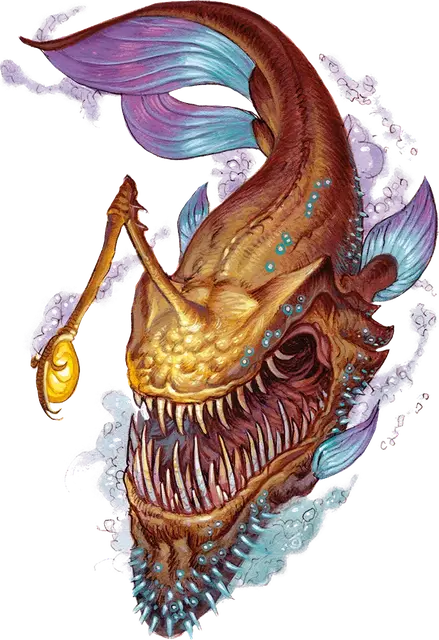

Звёздный удильщик
Star Angler
Большой Монстр, без мировоззрения

Класс Доспеха 15 (природный доспех)
Хиты 119 (14к10 + 42)
Скорость 0 футов, летая 40 футов
| мод | спас | ||
|---|---|---|---|
| СИЛ | 21 | +5 | +5 |
| ЛОВ | 15 | +2 | +2 |
| ТЕЛ | 17 | +3 | +3 |
| мод | спас | ||
|---|---|---|---|
| ИНТ | 3 | −4 | −4 |
| МДР | 14 | +2 | +2 |
| ХАР | 6 | −2 | −2 |
Навыки Восприятие +5, Скрытность +8
Чувства слепое зрение 120 футов (слеп за пределами этого радиуса), пассивное Восприятие 15
Опасность 8 (3900 опыта)
Бонус мастерства +3
Особенности
Избегание. Если звёздный удильщик подвергается эффекту, позволяющему совершить спасбросок, чтобы получить только половину урона, он вообще не получает урон, если преуспеет, и получает лишь половину урона при провале.
Свечение. Звёздный удильщик испускает яркий свет в радиусе 30 футов и тусклый свет в пределах ещё 30 футов.
Действия
Мультиатака. Звёздный удильщик совершает три атаки Укусом.
Укус. Рукопашная атака оружием: +8 к попаданию, досягаемость 5 футов, одна цель. Попадание: 16 (2к10 + 5) колющего урона.
Бонусные действия
Чарующая приманка. Приманка звёздного удильщика сияет чарующим звёздным светом, выбирая целью одно видимое удильщиком существо в пределах 120 футов. Цель должна преуспеть в спасброске Мудрости Сл 13, иначе становясь очарованной до начала следующего хода удильщика. Пока цель очарована таким образом, она становится недееспособной и должна использовать всё перемещение на своем ходу для того, чтобы перемещаться по прямой к звездному удильщику. Очарованная цель не избегает провоцированных атак, но избегает опасную местность. Цель может быть очарована только одним звёздным удильщиком за раз.
Описание
Находясь в дальнем родстве с поглотителями, звёздные удильщики — это астральные хищники, напоминающие огромных золотистых морских чертей с переливающимися плавниками и хвостами. У звёздного удильщика нет глаз, а его шкура усеяна биолюминесцентными крапинками, что позволяет ему легко сливаться с просторами Астрала. Фирменная приманка звёздного удильщика излучает чарующее сияние, которое стало причиной гибели для многих исследователей Дикого космоса.